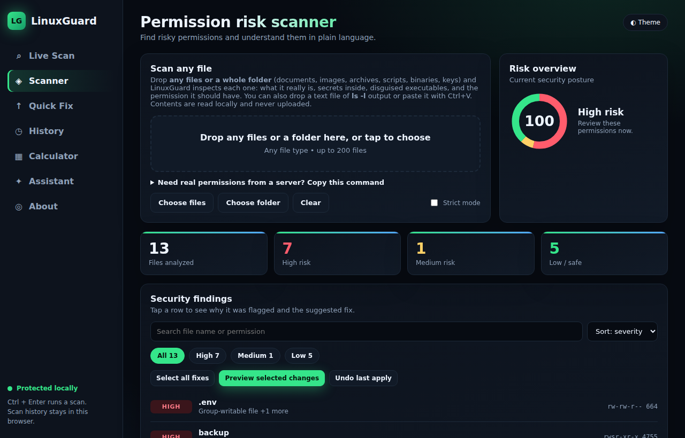
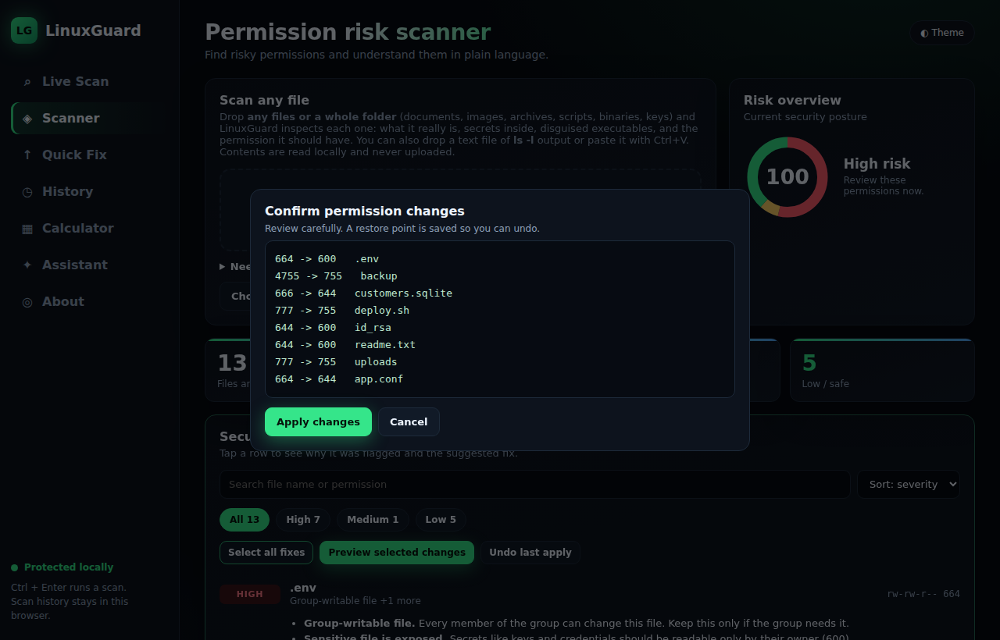
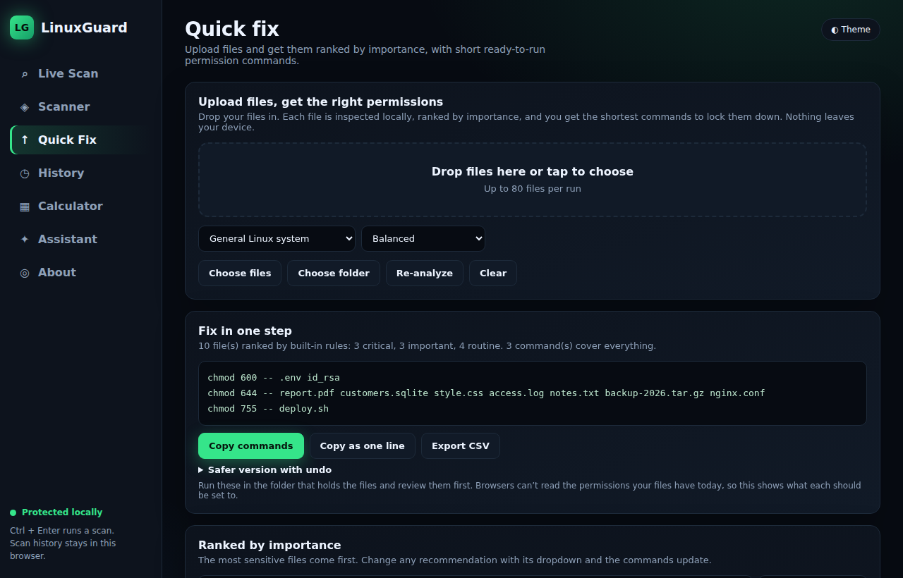
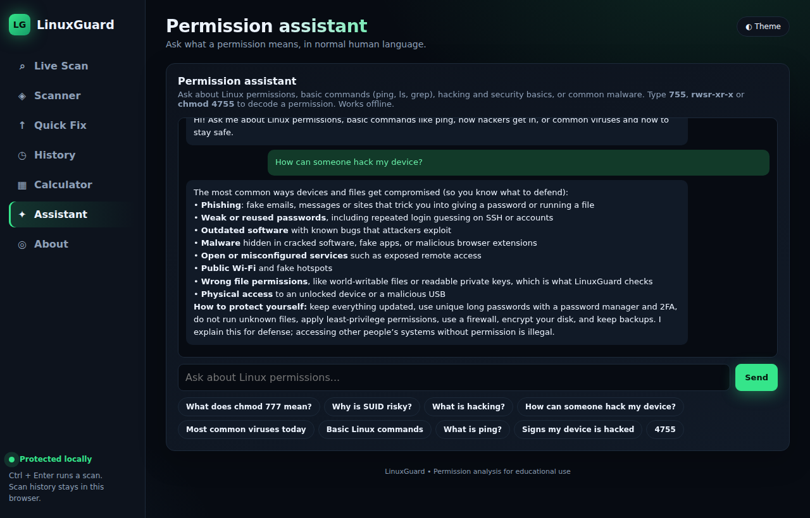

The same folder, read two ways.
Point it at any folder. It reads names and permissions, and never follows symlinks.
Detects the real file type, hidden secrets and executables disguised as images.
Keys and credentials first, logs and media last, so you fix what matters most.
Preview, confirm, apply. A restore point is saved so you can roll back instantly.
Save a baseline and see new, changed and removed files when permissions move.
Flags exposed .git folders, backup leftovers, open Docker sockets and risky SSH or sudo settings.

Risk score and ranked findings

Preview every change before it happens

Files ranked by importance with short commands

Offline assistant for permissions and security basics
Enter a path. Risks are scored and sorted from critical to routine.
Open a finding to see why it matters, in plain English.
Review the exact before and after, then confirm. Nothing changes before that.
Roll back in one click, or use drift watch to keep it fixed.
A security tool should be held to a higher standard. Every control below is covered by an automated test.
Listens on 127.0.0.1 with a secret token, host and origin checks, and a strict content policy.
SUID, SGID, sticky and world-writable permissions can never be applied.
Changes use open file descriptors, so a path swapped for a symlink mid-apply cannot redirect them.
No. The app runs on your computer and talks to nothing on the internet. File contents are only sampled locally to detect type and secrets, and are never stored or sent.
It only changes permissions after a preview and your confirmation, it refuses dangerous modes such as SUID or world-writable, and every apply saves a restore point you can undo.
It runs, but Windows does not store Linux permissions, so results there are approximate and Apply is disabled. A helper script runs it inside WSL for real results.
The desktop app is rule-based and works fully offline. The built-in assistant matches your question to prepared answers and tolerates typos, but it is not a language model.
It audits permissions, file content signals and common misconfigurations. It does not find software vulnerabilities, malware signatures or network exposure.
Yes. LinuxGuard is open source under the MIT license, for educational and defensive use on systems you own or are authorized to assess.
Python 3.8+ is all you need. No packages to install.